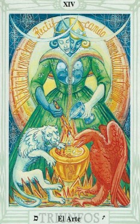

Descubre el mensaje que el tarot tiene para ti hoy. 🌊
El 10 de Espadas simboliza el final de una etapa dolorosa o desafiante. Aunque pueda parecer un día difícil, también trae consigo la promesa de un nuevo comienzo.
Aunque enfrentes momentos difíciles, recuerda que este es el inicio de algo nuevo. Aprende de lo vivido y prepárate para avanzar con fuerza renovada.
El 10 de Espadas te invita a aceptar los cambios inevitables. A veces es necesario dejar ir para dar paso a lo nuevo.
Hoy es un buen día para reflexionar sobre lo que ya no te sirve y cerrar ciclos que han cumplido su propósito.
Podría ser un día para dejar atrás viejas heridas. Permítete sanar y abrir espacio para nuevas oportunidades en tus relaciones.
Si enfrentas un reto o un final inesperado, recuerda que cada cierre trae nuevas oportunidades. Mantente positivo y busca alternativas.
Es momento de reorganizarte. Reevalúa tus prioridades financieras y planifica cómo avanzar desde aquí.
Dedica tiempo para descansar y recuperar energías. Cuida tu bienestar físico y emocional mientras te preparas para un nuevo comienzo.